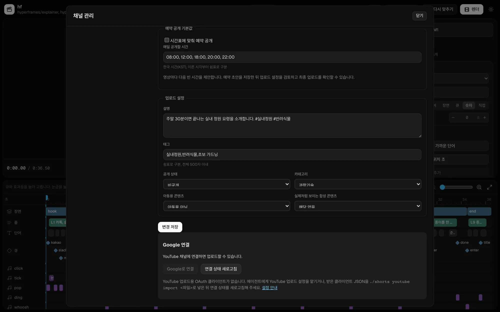
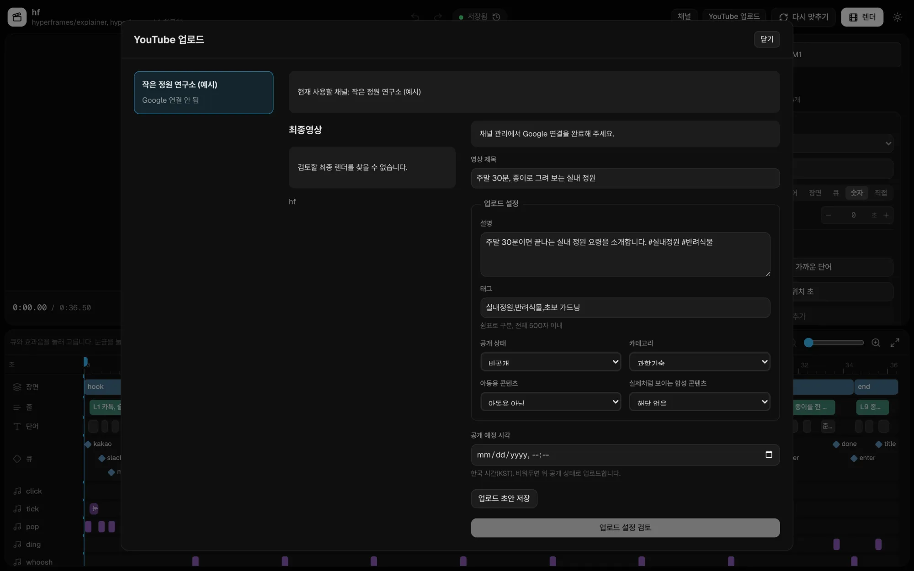

업로드 동작 설명
fishcut이 YouTube에 연결하고 영상을 올리는 과정, 저장하는 데이터, 권한을 취소하는 방법입니다. Google 검증 담당자와 처음 연결하는 사용자를 위해 한 페이지에 모았습니다.
1. 구조
fishcut 에디터는 사용자의 컴퓨터에서 실행되는 로컬 웹 앱입니다. 브라우저는 이 컴퓨터의 주소(127.0.0.1)로 에디터를 열고, 에디터는 Google 계정 연결과 YouTube 업로드 요청을 Google로 바로 보냅니다. 중간에 NomaDamas 서버가 없어서 NomaDamas는 토큰, 채널 정보, 영상을 받지 않습니다.
2. 연결부터 업로드까지
-
OAuth 클라이언트 넣기
오픈소스 저장소에는 OAuth 클라이언트 자격 증명을 넣을 수 없습니다. 사용자는 자기 Google Cloud 프로젝트에서 YouTube Data API v3를 켜고 데스크톱 앱 OAuth 클라이언트를 만든 뒤, 받은 JSON 파일을
fishcut youtube import <파일>로 넣습니다. 에이전트에게 맡겨도 됩니다. -
Google로 연결
먼저 채널 관리에서 fishcut 개인정보처리방침, fishcut 이용약관과 YouTube 서비스 약관을 확인하고, 기본으로 선택되지 않은 체크박스와 별도 동의 버튼으로 사람이 동의합니다. 동의한 버전과 시각은 이 컴퓨터의 게시 상태에 저장됩니다. 기존 Google 연결만으로 동의한 것으로 보지 않으며, 이미 연결돼 있다면 다시 연결할 필요는 없습니다. 에이전트는 이 동의를 대신할 수 없습니다.
그다음 "Google로 연결"을 누르면 시스템 기본 브라우저에서 Google 동의 화면이 열립니다. 앱 안의 내장 브라우저를 쓰지 않습니다. 동의 화면에서 앱 이름과 두 권한을 확인하고 허용하면, 에디터가 이 컴퓨터의 임시 주소로 결과를 받습니다(PKCE, state 검사). 이 Google 권한 허용은 에디터의 방침 동의와 별개입니다.

방침 동의 화면을 추가하기 전의 채널 관리 예시입니다. 현재 버전은 위에서 설명한 별도 동의도 요구합니다. OAuth 클라이언트를 넣기 전에는 "Google로 연결"이 꺼져 있습니다. -
채널 확인
연결이 끝나면 에디터가
youtube.readonly로 연결한 채널의 이름과 ID를 읽어 보여 줍니다. 업로드할 채널이 맞는지 이 화면에서 확인합니다. -
업로드 설정 검토
제목, 설명, 태그, 공개 범위(공개, 일부 공개, 비공개), 카테고리, 아동용 여부, 실제처럼 보이는 합성 콘텐츠 여부, 예약 시각을 정합니다. 채널 기본값이 미리 채워지지만 영상마다 바꿀 수 있고, 에디터가 입력값 뒤에 다른 글자를 덧붙이지 않습니다.
서버는 설정 검토와 실제 전송 전에 현재 방침 버전의 동의를 다시 확인합니다. 필요한 동의가 없으면 전송하지 않습니다. 초안 편집과 저장은 방침 동의와 구분되며, 연결 해제와 권한 취소 재시도도 별도 기능입니다. 다만 암호화 상태나 키를 읽을 수 없으면 인증 정보를 쓰는 작업은 중단합니다.

YouTube 업로드 설정. 예약 시각을 비워 두면 고른 공개 상태로 바로 올라갑니다. -
사람이 확인하고 업로드
검토 화면에서 최종 영상, 채널, 설정을 다시 보여 줍니다. 일반 업로드와 예약 업로드 모두 최종 버튼 옆에 YouTube 서비스 약관과 커뮤니티 가이드 준수, 저작권과 개인정보 보호에 관한 고지를 표시합니다. 사람이 "확인했고, YouTube에 업로드"를 눌러야
youtube.upload로 전송을 시작합니다. 에이전트는 이 버튼을 누를 수 없습니다. -
업로드 뒤 상태 확인
예약 업로드가 끝나면
youtube.readonly로 영상의 공개 상태와 예약 시각을 다시 읽어 요청한 값과 비교합니다. 예약하지 않은 업로드는 업로드 응답을 결과로 기록합니다.
3. 요청하는 권한
| 권한 | 쓰는 곳 | 쓰지 않는 곳 |
|---|---|---|
youtube.upload | 사람이 확인한 최종 영상을 사람이 정한 설정으로 연결한 채널에 올릴 때 | 사람의 확인 없는 업로드, 다른 채널의 영상 변경 |
youtube.readonly | 업로드할 채널의 이름과 ID 표시, 예약 업로드 뒤 공개 상태와 예약 시각 확인 | 시청 기록, 구독 목록, 분석 데이터 수집 |
fishcut이 Google API에서 받은 정보를 사용하고 다른 앱으로 보내는 방식은 제한적 사용 요구사항을 포함한 Google API 서비스 사용자 데이터 정책을 따릅니다.
fishcut's use and transfer to any other app of information received from Google APIs will adhere to the Google API Services User Data Policy, including the Limited Use requirements.
4. 저장하는 데이터
접근 토큰은 요청 처리 중 메모리에서만 씁니다. 갱신 토큰 등 게시 인증 정보와 재개용 업로드 세션 URL/전송 위치는 상태 폴더의 SQLite DB에 AES-256-GCM으로 암호화해 저장합니다. 키는 OS 자격 증명 저장소에 별도로 두고 DB에는 임의 키 식별자만 둡니다. macOS에서는 Keychain을 쓰며, Linux는 사용할 수 있는 Secret Service가 필요합니다.
폴더와 파일 권한(0700, 0600)은 암호화와 별개입니다. 채널 정보, 업로드 기록, 사용자 작성 자료, 프로젝트와 OAuth 클라이언트 파일 전체를 암호화하는 기능은 아닙니다. Docker의 state 볼륨만으로는 키 저장소가 제공되지 않습니다. 키가 없거나 잠겼거나 데이터가 손상되면 새 키로 바꾸거나 연결을 지우지 않고 중단합니다.
기존 평문 상태는 재시작만으로 변환하지 않습니다. 모든 편집기와 게시기를 멈춘 뒤 대상 상태와 OS 키 사용을 사람이 별도로 승인한 오프라인 보호 명령으로 변환해야 합니다. 연결, 확인 시각, 업로드 기록과 작성 자료를 보존하며, Google에 재연결하거나 권한을 취소하는 작업은 아닙니다. DB 잔여 페이지 정리가 실패하면 편집기를 멈춘 상태로 원인을 확인합니다. 이전 복제본과 백업의 평문까지 지운다고 보장하지 않습니다.
| 데이터 | 쓰는 곳 | 보관과 삭제 |
|---|---|---|
| Google 갱신 토큰 | YouTube 요청 인증 | 실제 연결 확인부터 30일이 지나면 유지보수 시 삭제합니다. 철회 요청 실패 시에는 사용을 막고 재시도용으로만 보관하며 철회 시작부터 7일이 지나면 유지보수 시 삭제합니다. |
| 연결한 채널의 ID와 이름 | 업로드할 채널 표시 | 실행 중 주기적으로 확인하고, 마지막 확인부터 30일이 지나면 유지보수 시 삭제합니다. 연결을 철회하면 사용을 막습니다. |
| 업로드 기록, 세션 URL과 중복 전송 확인용 해시 | 업로드 결과 확인과 중복 전송 방지 | 생성부터 30일이 지나면 유지보수 시 함께 삭제합니다. 편집기에서 연결을 철회하면 관련 기록을 즉시 로컬에서 삭제합니다. |
| 업로드 설정(제목, 설명, 태그, 공개 범위 등) | 사용자가 입력한 값을 다음 업로드에 다시 쓰기 | 사용자가 바꾸거나 지울 때까지 보관합니다. |
| OAuth 클라이언트 파일 | Google 연결 | 사용자가 바꾸거나 지울 때까지 보관합니다. |
| 방침 동의 버전과 시각, 키 식별자 | 사람의 동의 확인과 암호화 키 연결 | 로컬 게시 상태에 보관합니다. 다른 버전에 다시 동의하면 동의 기록을 갱신합니다. 키를 자동 교체하거나 삭제하지 않으며, 상태 폴더 삭제도 OS 키를 지우지는 않습니다. |
5. 권한 취소와 삭제
- 채널 관리에서 연결을 해제하면 먼저 연결 사용을 막고 Google에 토큰 취소를 요청합니다. 실패하면 취소 대기로 표시하고, 편집기 실행 중 다시 시도합니다. 로컬 기록 삭제와 Google 취소 성공은 구분합니다.
- Google 계정 권한 관리에서도 권한을 취소할 수 있습니다. 편집기는 실행 중 주기적으로 확인하며 Google이 토큰 무효를 명시적으로 응답하면 해당 연결과 관련 API 기록을 삭제합니다.
- 상태 폴더 삭제는 그 폴더의 로컬 데이터만 지우며 Google에 권한 취소 요청을 보내지 않습니다. OS 자격 증명 저장소의 키, 별도 프로젝트 파일, 백업, 이미 YouTube에 올라간 영상에는 영향이 없습니다.
6. 업로드 한도
YouTube Data API의 videos.insert 업로드 한도는 사용하는 Google Cloud 프로젝트에 적용됩니다. 실제 한도는 그 프로젝트의 할당량 화면에서 확인해야 합니다. fishcut의 증액 요청 제출은 승인이나 적용 완료를 뜻하지 않으며, 이 페이지는 하루 업로드 가능 횟수를 보장하지 않습니다.